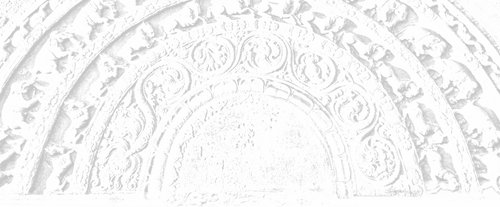

Sermon 21
Namo tassa bhagavato arahato sammāsambuddhassa
Namo tassa bhagavato arahato sammāsambuddhassa
Namo tassa bhagavato arahato sammāsambuddhassaEtaṁ santaṁ, etaṁ paṇītaṁ,
yadidaṁ sabbasaṅkhārasamatho sabbūpadhipaṭinissaggo
taṇhakkhayo virāgo nirodho nibbānaṁ.1“This is peaceful, this is excellent,
namely the stilling of all preparations, the relinquishment of all assets,
the destruction of craving, detachment, cessation, extinction.”
With the permission of the Most Venerable Great Preceptor and the assembly of the venerable meditative monks. This is the twenty-first sermon in the series of sermons on Nibbāna.
The other day we discussed, to some extent, the ten questions known as the ‘ten indeterminate points’, dasa avyākatavatthūni, which the Buddha laid aside, refusing to give a categorical answer as ‘yes’ or ‘no’. We pointed out, that the reason why he refused to answer them was the fact that they were founded on some wrong views, some wrong assumptions. To give categorical answers to such questions would amount to an assertion of those views. So he refrained from giving clear-cut answers to any of those questions.
Already from our last sermon, it should be clear, to some extent, how the eternalist and annihilationist views peep through them. The tetralemma on the after-death state of the Tathāgata, which is directly relevant to our theme, also presupposes the validity of those two extreme views. Had the Buddha given a categorical answer, he too would be committing himself to the presumptions underlying them.
The middle path he promulgated to the world is one that transcended both those extremes. It is not a piecemeal compromise between them. He could have presented a half-way solution by taking up one or the other of the last two standpoints, namely “the Tathāgata both exists and does not exist after death”, or “the Tathāgata neither exists nor does not exist after death”. But instead of stooping to that position, he rejected the questionnaire in toto.
On the other hand, he brought in a completely new mode of analysis, illustrative of the law of dependent arising underlying the doctrine of the four noble truths, in order to expose the fallacy of those questions.
The other day we happened to mention the conclusive answer given by the Buddha to the question raised by the wandering ascetic Vacchagotta in the Aggivacchagottasutta of the Majjhima Nikāya, concerning the after death state of the Tathāgata. But we had no time to discuss it at length. Therefore let us take it up again.
When the wandering ascetic Vacchagotta had granted the incongruity of any statement to the effect that the extinguished fire has gone in such and such a direction, and the fact that the term Nibbāna is only a reckoning or a turn of speech, the Buddha follows it up with the conclusion:
Evameva kho, Vaccha, yena rūpena tathāgataṁ paññāpayamāno paññāpeyya, taṁ rūpaṁ tathāgatassa pahīnaṁ ucchinnamūlaṁ tālāvatthukataṁ anabhāvakataṁ āyatiṁ anuppādadhammaṁ. Rūpasaṅkhāvimutto kho, Vaccha, tathāgato, gambhīro appameyyo duppariyogāho, seyyathāpi mahāsamuddo. Uppajjatī’ti na upeti, na uppajjatī’ti na upeti, uppajjati ca na ca uppajjatī’ti na upeti, neva uppajjati na na uppajjatī’ti na upeti.2
Even so, Vaccha, that form by which one designating the Tathāgata might designate him, that has been abandoned by him, cut off at the root, made like an uprooted palm tree, made non-existent and incapable of arising again. The Tathāgata is free from reckoning in terms of form, Vaccha, he is deep, immeasurable and hard to fathom, like the great ocean. To say that he is reborn falls short of a reply, to say that he is not reborn falls short of a reply, to say that he is both reborn and is not reborn falls short of a reply, to say that he is neither reborn nor is not reborn falls short of a reply.
As in the case of the aggregate of form, so also with regard to the aggregates of feeling, perception, preparations and consciousness, that is to say, in regard to all the five aggregates of grasping, the Buddha made this particular declaration. From this it is clear, that in this dispensation the Tathāgata cannot be reckoned in terms of any one of the five aggregates.
The similes reveal to us the state of the Tathāgata – the simile of the uprooted tree, for instance. On seeing a palm tree uprooted, but somehow left standing, one would mistake it for a growing palm tree. The worldling has a similar notion of the Tathāgata. This simile of the tree reminds us of the Isidattatheragāthā, which has an allusion to it.
Pañcakkhandhā pariññātā,
tiṭṭhanti chinnamūlakā,
dukkhakkhayo anuppatto,
patto me āsavakkhayo.3Five aggregates, now fully understood,
Just stand, cut off at their root,
Reached is suffering’s end,
Extinct for me are influxes.
On reaching arahanthood, one finds oneself in this strange situation. The occurrence of the word saṅkhā in this connection is particularly significant. This word came up in our discussion of the term papañca in the contexts papañcasaṅkhā and papañcasaññāsaṅkhā.4
There we had much to say about the word. It is synonymous with samaññā, ‘appellation’, and paññatti, ‘designation’. Reckoning, appellation and designation are synonymous to a great extent. So the concluding statement of the Buddha, already quoted, makes it clear that the Tathāgata cannot be reckoned or designated in terms of form, though he has form, he cannot be reckoned by feeling, though he experiences feeling, nor can he be reckoned by, or identified with, the aggregates of perceptions, preparations or consciousness.
Now in order to make a reckoning, or a designation, there has to be a duality, a dichotomy. We had occasion to touch upon this normative tendency to dichotomize. By way of illustration we may refer to the fact that even the price of an article can be reckoned, so long as there is a vortex between supply and demand.
There has to be some kind of vortex between two things, for there to be a designation. A vortex, or vaṭṭa, is an alternation between two things, a cyclic interrelation. A designation can come in only so long as there is such a cyclic process. Now the Tathāgata is free from this duality.
We have pointed out that the dichotomy between consciousness and name-and-form is the saṁsāric vortex. Let us refresh our memory of this vortex by alluding to a quotation from the Udāna which we brought up on an earlier occasion.
Chinnaṁ vaṭṭaṁ na vattati,
es’ ev’ anto dukkhassa.5The whirlpool cut off whirls no more.
This, even this, is suffering’s end.
This, in fact, is a reference to the arahant. The vortex is between consciousness and name-and-form. By letting go of name-and-form, and realizing the state of a non-manifestative consciousness, the arahant has, in this very life, realized the cessation of existence, which amounts to a cessation of suffering as well. Though he continues to live on, he does not grasp any of those aggregates tenaciously. His consciousness does not get attached to name-and-form. That is why it is said that the vortex turns no more.
To highlight this figure of the vortex, we can bring up another significant quotation from the Upādānaparivaṭṭasutta and the Sattaṭṭhānasutta of the Saṁyutta Nikāya.
Ye suvimuttā te kevalino, ye kevalino vaṭṭaṁ tesaṁ natthi paññāpanāya.6
Those who are fully released, are truly alone, and for them who are truly alone, there is no whirling round for purposes of designation.
This statement might sound rather queer. The term kevalī occurs not only in the Saṁyutta Nikāya, but in the Sutta Nipāta as well, with reference to the arahant. The commentary to the Sutta Nipāta, Paramatthajotikā, gives the following definition to the term when it comes up in the Kasibhāradvājasutta: sabbaguṇaparipuṇṇaṁ sabbayogavisaṁyuttaṁ vā.7 According to the commentator, this term is used for the arahant in the sense that he is perfect in all virtues, or else that he is released from all bonds.
But going by the implications of the word vaṭṭa, associated with it, we may say that the term has a deeper meaning. From the point of view of etymology, the word kevalī is suggestive of singularity, full integration, aloofness and solitude. We spoke of a letting go of name-and-form. The non-manifestative consciousness, released from name-and-form, is indeed symbolic of the arahant’s singularity, wholeness, aloofness and solitude.
In the following verse from the Dhammapada, which we had quoted earlier too, this release from name-and-form is well depicted.
Kodhaṁ jahe vippajaheyya mānaṁ,
saṁyojanaṁ sabbam atikkameyya,
taṁ nāmarūpasmim asajjamānaṁ,
akiñcanaṁ nānupatanti dukkhā.8Let one put wrath away and conceit abandon,
And get well beyond all fetters as well,
That one, untrammelled by name-and-form,
With naught as his own, no pains befall.
We came across another significant reference to the same effect in the Māghasutta of the Sutta Nipāta.
Ye ve asattā vicaranti loke,
akiñcanā kevalino yatattā,
kālena tesu havyaṁ pavecche,
yo brāhmaṇo puññapekho yajetha.9They who wander unattached in the world,
Owning naught, aloof, restrained,
To them in time, let the brahmin offer,
That oblation, if merit be his aim.
This verse also makes it clear, that a freedom from ownings and attachments is implicit in the term kevalī. It has connotations of full integration and aloofness. The term kevala, therefore, is suggestive of the state of release from that vortex.
If, for instance, a vortex in the ocean comes to cease, can one ask where the vortex has gone? It will be like asking where the extinguished fire has gone. One might say that the vortex has ‘joined’ the ocean. But that, too, would not be a proper statement to make. From the very outset what in fact was there was the great ocean, so one cannot say that the vortex has gone somewhere, nor can one say that it is not gone. It is also incorrect to say that it has joined the ocean.
A cessation of a vortex gives rise to such a problematic situation. So is this state called kevalī. What, in short, does it amount to? The vortex has now become the great ocean itself. That is the significance of the comparison of the emancipated one to the great ocean.
The commentators do not seem to have paid sufficient attention to the implications of this simile. But when one thinks of the relation between the vortex and the ocean, it is as if the arahant has become one with the ocean. But this is only a turn of speech.
In reality, the vortex is merely a certain pervert state of the ocean itself. That perversion is now no more. It has ceased. It is because of that perversion that there was a manifestation of suffering. The cessation of suffering could therefore be compared to the cessation of the vortex, leaving only the great ocean as it is.
Only so long as there is a whirling vortex can we point out a ‘here’ and a ‘there’. In the vast ocean, boundless as it is, where there is a vortex, or an eddy, we can point it out with a ‘here’ or a ‘there’.
Even so, in the case of the saṁsāric individual, as long as the whirling round is going on in the form of the vortex, there is a possibility of designation or appellation as ‘so-and-so’. But once the vortex has ceased, there is actually nothing to identify with, for purposes of designation. The most one can say about it, is to refer to it as the place where a vortex has ceased.
Such is the case with the Tathāgata too. Freedom from the duality is for him release from the vortex itself. We have explained on a previous occasion how a vortex comes to be.10 A current of water, trying to go against the mainstream, when its attempt is foiled, in clashing with the mainstream, gets thrown off and pushed back, but turns round to go whirling and whirling as a whirlpool. This is not the norm. This is something abnormal. Here is a perversion resulting from an attempt to do the impossible. This is how a thing called ‘a vortex’ comes to be.
The condition of the saṁsāric being is somewhat similar. What we are taught as the four ‘perversions’ in the Dhamma, describe these four pervert attitudes of a saṁsāric being.
- Perceiving permanence in the impermanent
- Perceiving pleasure in the painful
- Perceiving beauty in the foul
- Perceiving a self in the not-self.
The saṁsāric individual tries to forge ahead in existence, misled by these four pervert views. The result of that attempt is the vortex between consciousness and name-and-form, a recurrent process of whirling round and round.
Because of this process of whirling round, as in a vortex, there is an unreality about this world. What for us appears as the true and real state of the world, the Buddha declares to be false and unreal. We have already quoted on an earlier occasion the verse from the Dvayatānupassanāsutta of the Sutta Nipāta, which clearly illustrates this point.
Anattani attamāniṁ,
passa lokaṁ sadevakaṁ,
niviṭṭhaṁ nāmarūpasmiṁ,
idaṁ saccan’ti maññati.11
Just see the world, with all its gods,
Fancying a self where none exists,
Entrenched in name-and-form it holds
The conceit that this is real.
What the world entrenched in name-and-form takes to be real, it seems is unreal, according to this verse. This idea is reinforced by the following refrain-like phrase in the Uragasutta of the Sutta Nipāta:
Sabbaṁ vitatham idan’ti ñatvā loke,12
knowing that everything in this world is not ‘such’.
We have referred to the special significance of the Uragasutta on several occasions.13 That discourse enjoins a giving up of everything, like the sloughing off of a worn-out skin by a serpent. Now a serpent sheds its worn-out skin by understanding that it is no longer the real skin.
Similarly, one has to understand that everything in the world is not ‘such’. Tathā is ‘such’. Whatever is ‘as-it-is’, is yathābhūta. To be ‘as-it-is’, is to be ‘such’. What is not ‘as-it-is’, is ayathā or vitatha, ‘unsuch’ or ‘not such’, that is to say, unreal.
It seems, therefore, that the vortex whirling between consciousness and name-and-form, in the case of saṁsāric beings, is something not ‘such’. It is not the true state of affairs in the world. To be free from this aberration, this unreal state of duality, is to be an arahant.
The three unskilful mental states of greed, hate and delusion are the outcome of this duality itself. So long as the whirling goes on, there is friction manifesting itself, sometimes as greed and sometimes as hate. Delusion impels and propels both. It is just one current of water that goes whirling round and round, bringing about friction and conflict. This interplay between consciousness and name-and-form is actually a pervert state, abnormal and unreal. To be a Tathāgata is a return to reality and suchness, from this unreal, unsuch, pervert state.
We happened to mention earlier that the term Tathāgata was already current among ascetics of other sects. But it is not in the same sense that the Buddha used this term. For those of other sects, the term Tathāgata carried with it the prejudice of a soul or a self, even if it purported to represent the ideal of emancipation.
But in this dispensation, the Tathāgata is defined differently. Tathā, ‘even so’, ‘thus’, is the correlative of yathā, ‘just as’, ‘in whatever way’. At whatever moment it becomes possible to say that ‘as is the ocean, so is the vortex now’, then, it is the state of Tathāgata.
The vortex originated by deviating from the course of the main stream of the ocean. But if an individual, literally so-called, gave up such pervert attitudes, as seeing permanence in what is impermanent, if he got rid of the four perversions by the knowledge and insight into things as-they-are, then he comes to be known as a Tathāgata.
He is a ‘thus gone’, in the sense that, as is the norm of the world, ‘thus’ he is now. There is also an alternative explanation possible, etymologically. Tathatā is a term for the law of dependent arising.14 It means ‘thusness’ or ‘suchness’. This particular term, so integral to the understanding of the significance of paṭicca samuppāda, or ‘dependent arising’, is almost relegated to the limbo in our tradition.
Tathāgata could therefore be alternatively explained as a return to that ‘thusness’ or ‘suchness’, by comprehending it fully. In this sense, the derivation of the term could be explained analytically as tatha + āgata. Commentators, too, sometimes go for this etymology, though not exactly in this sense.15
According to this idea of a return to the true state of suchness, we may say that there is neither an increase nor a decrease in the ocean, when a vortex ceases. Why? Because what was found both inside the vortex and outside of it was simply water. So is the case with the saṁsāric individual.
What we have to say from here onwards, regarding this saṁsāric individual, is directly relevant to meditation. As we mentioned on an earlier occasion, the four elements, earth, water, fire and air, are to be found both internally and externally.
In the Mahāhatthipadopamasutta of the Majjhima Nikāya we come across a way of reflection that leads to insight in the following instruction.
Yā c’ eva kho pana ajjhattikā paṭhavidhātu, yā ca bāhirā paṭhavidhātu, paṭhavidhātur ev’ esā. Taṁ netaṁ mama, neso ’haṁ asmi, na meso attā’ti evam etaṁ yathābhūtaṁ sammappaññāya daṭṭhabbaṁ.16
Now whatever earth element that is internal, and whatever earth element that is external, both are simply earth element. That should be seen as it is with right wisdom thus: ‘this is not mine, this I am not, this is not my self.’
The implication is that this so-called individual, or person, is in fact a vortex, formed out of the same kind of primary elements that obtain outside of it. So then, the whole idea of an individual or a person is a mere perversion. The notion of individuality in saṁsāric beings is comparable to the apparent individuality of a vortex. It is only a pretence. That is why it is called asmimāna, the “conceit ‘am’”. In truth and fact, it is only a conceit.
This should be clear when one reflects on how the pure air gets caught up into this vortex as an in-breath, only to be ejected after a while as a foul out-breath. Portions of primary elements, predominating in earth and water, get involved with this vortex as food and drink, to make a few rounds within, only to be exuded as dirty excreta and urine. This way, one can understand the fact that what is actually there is only a certain delimitation or measuring as ‘internal’ and ‘external’.
What sustains this process of measuring or reckoning is the duality – the notion that there are two things. So then, the supreme deliverance in this dispensation is release from this duality. Release from this duality is at the same time release from greed and hate.
Ignorance is a sort of going round, in a winding pattern, as in the case of a coil. Each round seems so different from the previous one, a peculiar novelty arising out of the forgetting or ignoring trait, characteristic of ignorance.
However much one suffers in one life cycle, when one starts another life cycle with a new birth, one is in a new world, in a new form of existence. The sufferings in the previous life cycle are almost forgotten. The vast cycle of saṁsāra, this endless faring round in time and space, is like a vortex.
The vortical interplay between consciousness and name-and-form has the same background of ignorance. In fact, it is like the seed of the entire process. A disease is diagnosed by the characteristics of the germ. Even so, the Buddha pointed out, that the basic principle underlying the saṁsāric vortex is traceable to the vortical interplay between consciousness and name-and-form, going on within our minds.
This germinal vortex, between consciousness and name-and-form, is an extremely subtle one that eludes the limitations of both time and space. This, indeed, is the timeless principle inherent in the law of paṭicca samuppāda, or ‘dependent arising’. Therefore, the solution to the whole problem lies in the understanding of this law of dependent arising.
We have mentioned on a previous occasion that the saṅkhata, or the ‘prepared’, becomes asaṅkhata, or the ‘unprepared’, by the very understanding of the ‘prepared’ nature of the saṅkhata.17 The reason is that the prepared appears to be ‘so’, due to the lack of understanding of its composite and prepared nature. This might well appear a riddle.
The faring round in saṁsāra is the result of ignorance. That is why final deliverance is said to be brought about by wisdom in this dispensation. All in all, one extremely important fact emerges from this discussion, namely the fact that the etymology attributed to the term Tathāgata by the Buddha is highly significant.
It effectively explains why he refused to answer the tetralemma concerning the after death state of the Tathāgata. When a vortex has ceased, it is problematic whether it has gone somewhere or joined the great ocean. Similarly, there is a problem of identity in the case of a Tathāgata, even when he is living. This simile of the ocean gives us a clue to a certain much-vexed riddle-like discourse on Nibbāna.
Many of those scholars, who put forward views on Nibbāna with an eternalist bias, count on the Pahārādasutta found among the Eights of the Aṅguttara Nikāya.18 In fact, that discourse occurs in the Vinaya Cūḷavagga and in the Udāna as well.19
In the Pahārādasutta, the Buddha gives a sustained simile, explaining eight marvellous qualities of this dispensation to the asura king Pahārāda, by comparing them to eight marvels of the great ocean. The fifth marvellous quality is stated as follows:
Seyyathāpi, Pahārāda, yā kāci loke savantiyo mahāsamuddam appenti, yā kāci antalikkhā dhārā papatanti, na tena mahāsamuddassa ūnattaṁ vā pūrattaṁ vā paññāyati, evam eva kho, Pahārāda, bahū ce pi bhikkhū anupādisesāya nibbānadhātuyā parinibbāyanti, na tena nibbānadhātuyā ūnattaṁ vā pūrattaṁ va paññāyati.20
Just as, Pahārāda, however many rivers of the world may flow into the great ocean and however much torrential downpours may fall on it from the sky, no decrease or increase is apparent in the great ocean, even so, Pahārāda, although many monks may attain parinibbāna in the Nibbāna element without residual clinging, thereby no decrease or increase is apparent in the Nibbāna element.
Quite a number of scholars draw upon this passage when they put forward the view that arahants, after their death, find some place of refuge which never gets overcrowded. It is a ridiculous idea, utterly misconceived. It is incompatible with this Dhamma, which rejects both eternalist and annihilationist views. Such ideas seem to have been put forward due to a lack of appreciation of the metaphorical significance of this particular discourse and a disregard for the implications of this comparison of the arahant to the great ocean, in point of his suchness or tathatā.
In the light of these facts, we have to conclude that Nibbāna is actually the truth, and that saṁsāra is a mere perversion. That is why the Dvayatānupassanāsutta, from which we have quoted earlier too, is fundamentally important. It says that what the world takes as the truth, that the ariyans have seen with wisdom as untruth.
Yaṁ pare sukhato āhu,
tad ariyā āhu dukkhato,
yaṁ pare dukkhato āhu,
tad ariyā sukhato vidū.21What others may call bliss,
That the ariyans make known as pain.
What others may call pain,
That the ariyans have known to be bliss.
And it effectively concludes:
Passa dhammaṁ durājānaṁ,
sampamūḷh’ ettha aviddasū.Behold a norm, so had to grasp,
Baffled herein are ignorant ones.
The truth of this profound declaration by the Buddha could be seen in these deeper dimensions of the meaning of tathatā. By way of further clarification of what we have already stated about the Tathāgata and the mode of answering those questions about his after death state, we may now take up the Anurādhasutta of the Saṁyutta Nikāya, which is of paramount importance in this issue.
According to this discourse, when the Buddha was once dwelling in the gabled hall in Vesalī, a monk named Anurādha was living in a hut in a jungle close by. One day he was confronted with a situation, which shows that even a forest dwelling monk cannot afford to ignore questions like this. A group of wandering ascetics of other sects approached him and, seated in front of him, made this pronouncement, as if to see his response.
Yo so, āvuso Anurādha, tathāgato uttamapuriso paramapuriso paramapattipatto, taṁ tathāgataṁ imesu catūsu ṭhānesu paññāpayamāno paññāpeti:
’Hoti tathāgato paraṁ maraṇā’ti vā
’na hoti tathāgato paraṁ maraṇā’ti vā
’hoti ca na ca hoti tathāgato paraṁ maraṇā’ti vā
’neva hoti na na hoti tathāgato paraṁ maraṇā’ti vā.22Friend Anurādha, as to that Tathāgata, the highest person, the supreme person, the one who has attained the supreme state, in designating him one does so in terms of these four propositions:
‘the Tathāgata exists after death’,
‘the Tathāgata does not exist after death’,
‘the Tathāgata both exists and does not exist after death’,
‘the Tathāgata neither exists nor does not exist after death’.
What those ascetics of other sects wanted to convey, was that the state of the Tathāgata after death could be predicated only by one of these four propositions, constituting the tetralemma. But then Venerable Anurādha made the following declaration, as if to repudiate that view:
Yo so, āvuso, tathāgato uttamapuriso paramapuriso paramapattipatto, taṁ tathāgataṁ aññatr’imehi catūhi ṭhānehi paññāpayamāno paññāpeti.
Friends, as to that Tathāgata, the highest person, the supreme person, the one who has attained the supreme state, in designating him one does so apart from these four propositions.
As soon as he made this statement, those ascetics of other sects made the derogatory remark: “This must be either a new-comer to the Order, just gone forth, or a foolish incompetent elder.”
With this insult, they got up and left, and Venerable Anurādha fell to thinking: “If those wandering ascetics of other sects should question me further, how should I answer them creditably, so as to state what has been said by the Exalted One, and not to misrepresent him. How should I explain in keeping with the norm of Dhamma, so that there will be no justifiable occasion for impeachment.”
With this doubt in mind, he approached the Buddha and related the whole episode. The Buddha, however, instead of giving a short answer, led Venerable Anurādha step by step to an understanding of the Dhamma, catechetically, by a wonderfully graded path. First of all, he convinced Venerable Anurādha of the three characteristics of existence.
’Taṁ kiṁ maññasi, Anurādha, rūpaṁ niccaṁ vā aniccaṁ vā’ti.
‘Aniccaṁ bhante.’
’Yaṁ panāniccaṁ dukkhaṁ vā taṁ sukhaṁ vā’ti.
‘Dukkhaṁ bhante.’
’Yaṁ panāniccaṁ dukkhaṁ vipariṇāmadhammaṁ kallaṁ nu taṁ samanupassituṁ: ’etaṁ mama, eso ’ham asmi, eso me attā’ti.
‘No h’etaṁ bhante.’
“What do you think, Anurādha, is form permanent or impermanent?”
“Impermanent, venerable sir.”
“Is what is impermanent suffering or happiness?”
“Suffering, venerable sir.”
“Is what is impermanent, suffering, and subject to change, fit to be regarded thus: ‘This is mine, this am I, this is my self’?”
“No indeed, venerable sir.”
So also with regard to the other aggregates, the Buddha guided Venerable Anurādha to the correct standpoint of the Dhamma, in this case by three steps, and this is the first step.
He put aside the problem of the Tathāgata for a moment and highlighted the characteristic of not-self out of the three signata, thereby convincing Anurādha that what is impermanent, suffering and subject to change, is not fit to be regarded as self. Now comes the second step, which is, more or less, a reflection leading to insight.
Tasmā ti ha, Anurādha, yaṁ kiñci rūpam atītānāgatapaccuppannam ajjhattaṁ vā bahiddhā vā oḷārikaṁ vā sukhumaṁ vā hīnaṁ vā paṇītaṁ vā, yaṁ dūre santike vā, sabbaṁ rūpaṁ ’netaṁ mama, neso ’ham asmi, na meso attā’ti evam etaṁ yathābhūtaṁ sammappaññāya daṭṭhabbaṁ.
Yā kāci vedanā atītānāgatapaccuppannā … yā kāci saññā … ye keci saṅkhāra … yaṁ kiñci viññāṇaṁ atītānāgatapaccuppannam ajjhattaṁ vā bahiddhā vā oḷārikaṁ vā sukhumaṁ vā hīnaṁ vā paṇītaṁ vā, yaṁ dūre santike vā, sabbaṁ viññāṇaṁ ’netaṁ mama, neso ’ham asmi, na meso attā’ti evam etaṁ yathābhūtaṁ sammappaññāya daṭṭhabbaṁ.
Evaṁ passaṁ, Anurādha, sutavā ariyasāvako rūpasmim pi nibbindati, vedanāya pi nibbindati, saññāya pi nibbindati, saṅkhāresu pi nibbindati, viññāṇasmim pi nibbindati. Nibbindaṁ virajjati, virāgā vimuccati, vimuttasmiṁ vimuttam iti ñāṇaṁ hoti:
’khīṇā jāti vusitaṁ brahmacariyaṁ, kataṁ karaṇīyaṁ, nāparam itthattāyā’ti pajānāti.
Therefore, Anurādha, any kind of form whatsoever, whether past, future or present, internal or external, gross or subtle, inferior or superior, far or near, all form should be seen as it really is, with right wisdom thus: ‘This is not mine, this I am not, this is not my self’.
Any kind of feelings whatsoever, whether past, future or present … any kind of perception … any kind of preparations … any kind of consciousness whatsoever, whether past, future or present, internal or external, gross or subtle, inferior or superior, far or near, all consciousness should be seen as it really is, with right wisdom thus: ‘This is not mine, this I am not, this is not my self’.
Seeing thus, Anurādha, the instructed noble disciple gets disgusted of form, gets disgusted of feeling, gets disgusted of perception, gets disgusted of preparations, gets disgusted of consciousness. With disgust, he becomes dispassionate, through dispassion his mind is liberated, when it is liberated, there comes the knowledge ‘it is liberated’ and he understands:
‘Extinct is birth, lived is the holy life, done is what is to be done, there is no more of this state of being’.
Here the Buddha is presenting a mode of reflection that culminates in arahanthood. If one is prepared to accept the not-self standpoint, then what one has to do, is to see with right wisdom all the five aggregates as not-self in a most comprehensive manner. This is the second step.
Now, as the third step, the Buddha sharply addresses a series of questions to Venerable Anurādha, to judge how he would determine the relation of the Tathāgata, or the emancipated one, to the five aggregates.
“What do you think, Anurādha, do you regard form as the Tathāgata?” “No, venerable sir.”
“Do you regard feeling … perception … preparations … consciousness as the Tathāgata?” “No, venerable sir.”
“What do you think, Anurādha, do you regard the Tathāgata as in form?” “No, venerable sir.”
“Do you regard the Tathāgata as apart from form?” “No, venerable sir.”
“Do you regard the Tathāgata as in feeling?” “No, venerable sir.”
“Do you regard the Tathāgata as apart from feeling?” “No, venerable sir.”
“Do you regard the Tathāgata as in perception?” “No, venerable sir.”
“Do you regard the Tathāgata as apart from perception?” “No, venerable sir.”
“Do you regard the Tathāgata as in preparations?” “No, venerable sir.”
“Do you regard the Tathāgata as apart from preparations?” “No, venerable sir.”
“Do you regard the Tathāgata as in consciousness?” “No, venerable sir.”
“Do you regard the Tathāgata as apart from consciousness?” “No, venerable sir.”
“What do you think, Anurādha, do you regard the Tathāgata as one who is without form, without feeling, without perception, without preparations, without consciousness?” “No, venerable sir.”
When Venerable Anurādha gives negative answers to all these four modes of questions, the Buddha draws the inevitable conclusion that accords with the Dhamma.
“Ettha ca te, Anurādha, diṭṭheva dhamme saccato thetato tathāgate anupalabbhiyamāne, kallaṁ nu te taṁ veyyākaraṇaṁ:
‘Yo so, āvuso, tathāgato uttamapuriso paramapuriso paramapattipatto, taṁ tathāgataṁ aññatr’imehi catūhi ṭhānehi paññāpayamāno paññāpeti’?“
“No hetaṁ bhante.”
“So then, Anurādha, when for you a Tathāgata is not to be found in truth and fact here in this very life, is it fitting for you to declare, as you did:
‘Friends, as to the Tathāgata, the highest person, the supreme person, the one who has attained the supreme state, in designating him one does so apart from these four propositions’?“
“No, venerable sir.”
This conclusion, namely that the Tathāgata is not to be found in truth and fact even in this very life, is one that drives terror into many who are steeped in the craving for existence. But this, it seems, is the upshot of the catechism.
The rebuke of the wandering ascetics is justifiable, because the tetralemma exhausts the universe of discourse and there is no way out. The Buddha’s reproof of Anurādha amounts to an admission that even here and now the Tathāgata does not exist in truth and fact, not to speak of his condition hereafter.
When Anurādha accepts this position, the Buddha expresses his approbation with the words:
Sādhu, sādhu, Anurādha, pubbe cāham Anurādha etarahi ca dukkhañceva paññāpemi dukkhassa ca nirodhaṁ.
“Good, good, Anurādha, formerly as well as now I make known just suffering and the cessation of suffering.”
This declaration makes it clear that the four noble truths are the teaching proper and that terms like Tathāgata, satta and pugala are mere concepts. No doubt, this is a disconcerting revelation. So let us see, whether there is any possibility of salvaging the Tathāgata.
Now there is the word upalabbhati occurring in this context, which is supposed to be rather ambiguous. In fact, some prefer to render it in such a way as to mean the Tathāgata does exist, only that he cannot be traced.
Tathāgata, it seems, exists in truth and fact, though one cannot find him. This is the way they get round the difficulty. But then, let us examine some of the contexts in which the word occurs, to see whether there is a case for such an interpretation.
A clear-cut instance of the usage of this expression comes in the Vajirāsutta of the Saṁyutta Nikāya. The arahant nun Vajirā addresses the following challenge to Māra:
Kinnu ’satto’ti paccesi,
Māra diṭṭhigatannu te,
suddhasaṅkhārapuñjo, yaṁ,
nayidha sattūpalabbhati.23What do you mean by a ‘being’, O Māra,
Isn’t it a bigoted view, on your part,
This is purely a heap of preparations, mind you,
No being is to be found here at all.
The context as well as the tone makes it clear that the word upalabbhati definitely means “not to be found”, not that there is a being but one cannot find it.
We may take up another instance from the Purābhedasutta of the Sutta Nipāta, where the theme is the arahant.
Na tassa puttā pasavo vā,
khettaṁ vatthuṁ na vijjati,
attaṁ vāpi nirattaṁ vā,
na tasmim upalabbhati.24Not for him are sons and cattle,
He has no field or site to build,
In him there is not to be found,
Anything that is grasped or given up.
The words attaṁ and nirattaṁ are suggestive of the dichotomy from which the arahant is free. The context unmistakeably proves that the expression na upalabbhati means ‘not to be found’.
All this goes to show that the Buddha set aside the four questions forming the tetralemma not because they are irrelevant from the point of view of Nibbāna, despite the fact that he could have answered them.
That is to say, not that he could not, but that he would not. How can one say that the question of an arahant’s after death state is totally irrelevant? So that is not the reason.
The reason is that the questions are misleading. Those who posed these questions had the presumption that the word Tathāgata implied a truly existing being or a person. But the Buddha pointed out that the concept of a being or a person is fallacious.
Though it is fallacious, for the worldling living in an illusory unreal world, it has its place as a relative reality. Due to the very fact that it is grasped, it is binding on him.
Therefore, when a worldling uses such terms as ‘I’ and ‘mine’, or a ‘being’ and a ‘person’, it is not a mere way of expression. It is a level of reality proper to the worldling’s scale of values.
But for the arahants, who have reached the state of suchness, it is a mere concept. In fact, it becomes a mere concept in the context of the simile of the vortex and the ocean. That is to say, in the case of the arahants, their five aggregates resemble the flotsam and jetsam on the surface waters of a vortex already ceased at its depth.
On seeing the Buddha and the arahants, one might still say, as a way of saying, ‘here is the Buddha’, ‘here are the arahants’. For the Buddha, the concept of a ‘being’ is something incompatible with his teaching from beginning to end. But for the nonce he had to use it, as is evident from many a discourse.
The expression aṭṭha ariyapuggalā, ‘the eight noble persons’, includes the arahant as well. Similarly in such contexts as the Aggappasādasutta, the term satta is used indiscriminately, giving way to conventional usage.
Yāvatā, bhikkhave, sattā apadā va dipadā vā catuppadā vā bahuppadā vā rūpino vā arūpino vā saññino vā asaññino vā nevasaññināsaññino vā, tathāgato tesaṁ aggamakkhāyati arahaṁ sammāsambuddho.25
Monks, whatever kinds of beings there be, whether footless or two-footed, or four-footed, or many footed, with form or formless, percipient or non-percipient, or neither-percipient-nor-non-percipient, among them the Tathāgata, worthy and fully awakened, is called supreme.
Although the term satta occurs there, it is only by way of worldly parlance. In truth and fact, however, there is no ‘being’ as such. In a previous sermon we happened to mention a new etymology given by the Buddha to the term loka, or ‘world’.26
In the same way, he advanced a new etymology for the term satta. As mentioned in the Rādhasaṁyutta of the Saṁyutta Nikāya, Venerable Rādha once posed the following question to the Buddha:
’Satto, satto’ti, bhante, vuccati. Kittāvatā nu kho, bhante, ’satto’ti vuccati?27
Venerable sir, it is said ‘a being’, ‘a being’. To what extent can one be called ‘a being’.
Then the Buddha explains:
Rūpe … vedanāya … saññāya … saṅkhāresu … viññāṇe kho, Rādha, yo chando yo rāgo yā nandī yā taṇhā, tatra satto, tatra visatto, tasmā ’satto’ti vuccati.
Rādha, that desire, that lust, that delight, that craving in form … feeling … perception … preparations … consciousness, with which one is attached and thoroughly attached to it, therefore is one called a ‘being’.
Here the Buddha is punning on the word satta, which has two meanings, a ‘being’ and ‘the one attached’. The etymology attributed to that word by the Buddha brings out in sharp relief the attachment as well, whereas in his redefinition of the term loka, he followed an etymology that stressed the disintegrating nature of the world.28
Satto visatto, tasmā ’satto’ti vuccati,
attached, thoroughly attached, therefore is one called a ‘being’.
Having given this new definition, the Buddha follows it up with a scintillating simile.
Suppose, Rādha, some little boys and girls are playing with sand castles. So long as their lust, desire, love, thirst, passion and craving for those things have not gone away, they remain fond of them, they play with them, treat them as their property and call them their own. But when, Rādha, those little boys and girls have outgrown that lust, desire, love, thirst, passion and craving for those sand castles, they scatter them with their hands and feet, demolish them, dismantle them and render them unplayable.
Now comes the Buddha’s admonition, based on this simile:
Evam eva kho, Rādha, tumhe rūpaṁ … vedanaṁ … saññaṁ … saṅkhāre … viññāṇaṁ vikiratha vidhamatha viddhaṁsetha vikīḷanikaṁ karotha taṇhakkhayāya paṭipajjatha.
Even so, Rādha, you all scatter form … feeling … perception … preparations … consciousness, demolish it, dismantle it and render it unplayable. Practise for the destruction of craving.
And then he winds up with that highly significant conclusive remark:
Taṇhakkhayo hi, Rādha, nibbānaṁ.
For, the destruction of craving, Rādha, is Nibbāna.